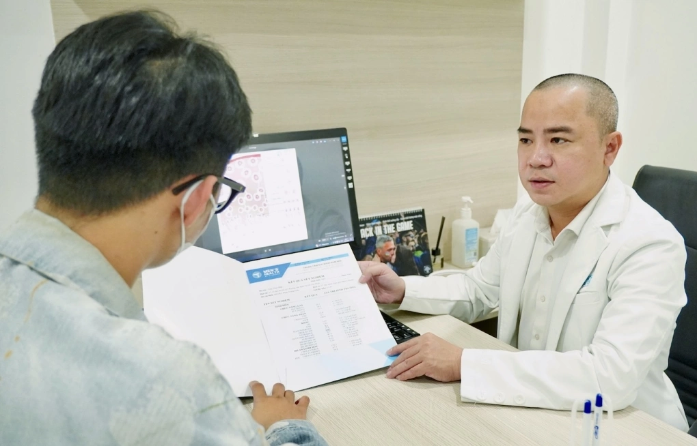

(Vnexpress) - Đến phòng khám vì cơn sốt nhẹ và vài nốt hạch bẹn, chàng trai 19 tuổi sốc khi nhận kết quả dương tính với HIV sau những lần "tìm vui" qua mạng.
Nam thanh niên được bạn trai cũ đưa đến khám khi thấy cơ thể mệt mỏi, sốt âm ỉ và nổi hạch vùng bẹn. Ban đầu, cả hai chỉ nghĩ đến một bệnh nhiễm trùng thông thường. Tuy nhiên, khi bác sĩ chỉ định làm các xét nghiệm tầm soát bệnh lây truyền qua đường tình dục, kết quả cho thấy bệnh nhân nhiễm HIV, đồng thời mắc viêm gan B.
Theo TS.BS.CK2 Trà Anh Duy, Trung tâm Sức khỏe Nam giới Men's Health, điều gây trăn trở không chỉ là độ tuổi quá trẻ mà còn là tâm lý người bệnh. Chàng trai sống kín đáo, giấu xu hướng tính dục, gần như suy sụp khi nhận kết quả và rơi vào trạng thái hoang mang kéo dài. "Đây không chỉ là câu chuyện của virus, mà còn là câu chuyện của cô độc và thiếu chỗ dựa tâm lý", bác sĩ nói.

Bác sĩ Duy tư vấn cho người bệnh về kết quả xét nghiệm.
Không chỉ trường hợp này, phòng khám thường xuyên ghi nhận các ca phát hiện HIV rất "tình cờ". Mới đây, hai nam nhân viên văn phòng sau một đêm karaoke và massage đến khám vì lo mắc "bệnh xã hội". Một người có biểu hiện viêm niệu đạo, người còn lại gần như không có triệu chứng đáng kể. Tuy nhiên, khi làm xét nghiệm đầy đủ, một người cho kết quả dương tính với HIV, nhiều khả năng đã nhiễm từ vài tháng trước. Cả hai đều sốc, hoang mang và gần như không tin chuyện xảy ra với mình.
Theo bác sĩ Duy, HIV không còn là câu chuyện xa lạ. Điểm chung ở nhiều ca bệnh là không hề nghĩ mình có nguy cơ. Họ đến khám vì tiểu buốt, nổi sùi, đau họng, viêm hậu môn, hoặc chỉ vì "thấy cơ thể hơi lạ", rồi bất ngờ nhận kết quả HIV.
"Nhiều người trẻ nghĩ rằng không có triệu chứng thì đồng nghĩa an toàn, trong khi thực tế HIV có thể tồn tại trong cơ thể một thời gian dài mà không biểu hiện rõ ràng", bác sĩ phân tích. Có người vẫn sinh hoạt bình thường, vẫn hẹn hò và nghĩ mình ổn, cho đến khi đi khám một bệnh khác mới phát hiện.
Tại TP HCM, HIV hiện tập trung chủ yếu ở nhóm người trẻ, với hàng nghìn ca nhiễm mới mỗi năm. Thống kê năm 2025 cho thấy nhóm 15-29 tuổi chiếm 42% số ca nhiễm mới, cao hơn các nhóm tuổi còn lại. Đáng chú ý, 81% ca nhiễm mới lây qua quan hệ tình dục không an toàn, thay thế đường lây chủ đạo trước đây là tiêm chích ma túy. Trong các nhóm nguy cơ cao chiếm khoảng 90% tổng số ca mới, nhóm nam quan hệ tình dục đồng giới (MSM) chiếm tỷ lệ lớn nhất với 54%.
Bác sĩ cho rằng người trẻ dễ đối mặt nguy cơ cao do nhiều yếu tố quan hệ tình dục sớm nhưng thiếu kỹ năng bảo vệ, việc tìm bạn tình qua app nhanh và kín khiến các cuộc gặp thiếu thông tin, ít kiểm soát nguy cơ. Việc kết nối qua các ứng dụng hẹn hò ngày càng dễ dàng, nhưng kiến thức tự bảo vệ lại không theo kịp.
Bên cạnh đó, không ít người vẫn ngại sử dụng bao cao su, ngại xét nghiệm, ngại tìm hiểu về các biện pháp dự phòng như PrEP, trong khi lại quá tin vào cảm giác "nhìn người này chắc an toàn". Ngoài ra, kỳ thị cũng là rào cản lớn. Nhiều người trẻ vừa phải giấu bản thân, vừa sợ bị đánh giá nên trì hoãn việc đi khám, xét nghiệm, khiến bệnh thường được phát hiện muộn.
Theo bác sĩ Duy, HIV ngày nay không còn là "án tử" nếu được phát hiện sớm và điều trị đúng, nhưng vẫn là bệnh mạn tính cần theo dõi lâu dài. Phòng ngừa HIV không quá phức tạp, chỉ cần sử dụng bao cao su đúng cách, xét nghiệm định kỳ và cân nhắc PrEP nếu có nguy cơ lặp lại. Trường hợp vừa có hành vi nguy cơ cao như quan hệ không bảo vệ hoặc rách bao, cần nghĩ đến PEP và sử dụng càng sớm càng tốt, tốt nhất trong vòng 72 giờ.
Ngoài ra, không nên chỉ xét nghiệm HIV khi có triệu chứng. Người có nguy cơ nên tầm soát định kỳ, đồng thời kiểm tra thêm các bệnh lây truyền qua đường tình dục như giang mai, lậu, chlamydia, viêm gan B, viêm gan C, bởi HIV thường đi kèm các bệnh này.
BÌNH LUẬN